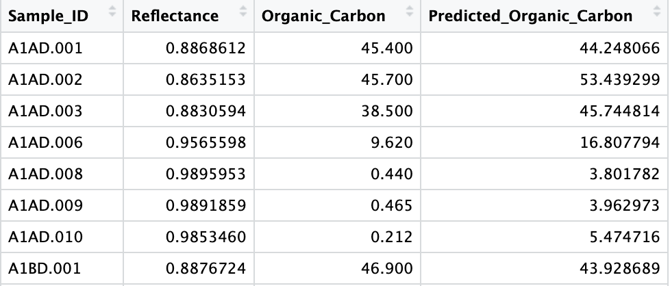

carbcontpred: Predicting Organic Carbon Content Soil Samples Based on Their Spectral Reflectance in Hudson Bay Lowlands, Ontario, Canada
This package contains objects that are sourced from a 2022 McMaster
Remote Sensing Laboratory research project and objects created to
facilitate the use and analysis of the fieldwork data. The project
recorded a wide range of biochemical, biophysical, and spectral metrics
of 432 soil samples that were collected from the Hudson Bay Lowlands (N
51.220318, W 80.556189) and measured and analyzed at McMaster University
and the University of Guelph. A portion of the project’s data has been
cleaned and packaged for easy use in an R environment.
The soil samples were collected from near the Kashechewan (N 52.253621, W 81.776621), Moose Factory (N 51.220318, W 80.556189), and Attawapiskat (N 52.934019, W 82.377133) First Nation communities in northern Ontario, Canada. The image below shows the 3 locations where the soil samples were collected from:

The project was funded by the Natural Sciences and Engineering Research Council of Canada (NSERC) through the Discovery Grants program (RGPIN-2020-05,708). The corresponding author is Kangyu So1. The full list of authors can be found here2.
What Is This Package?
The package carbcontpred contains objects that are
sourced from a 2022 McMaster Remote Sensing Laboratory research project
and objects created to facilitate the use and analysis of the fieldwork
data. This package includes data on the spectral reflectance and organic
carbon content of soil samples after they have been dried in an oven for
48 hours. The package also includes the function cpred for
building a linear regression model to make organic carbon content
predictions, and an R Markdown file on pre-processing the
data for cpred.
The raw data from the research project will eventually be freely
available to the public through a repository on GitHub, but it is bulky
and organized in a complicated manner. carbcontpred
pre-processes the data in R, extracting the portion of the
data that is useful for developing predictive models for carbon stock in
soil samples. The package also includes functions that can be used to
build predictive models or be tuned in the future by the authors or an
open-source community.
Set-Up
Installation
This is how you install the package if you have not done so yet:
install.packages('carbcontpred', repos = "https://github.com/KangyuSo/carbcontpred")Begin by loading the package:
Pre-Processing Data for cpred
The 2022 McMaster Remote Sensing Laboratory research project collected soil samples from the Hudson Bay Lowlands region in northern Ontario, Canada (N 51.220318, W 80.556189). Included within are two csv files containing data for the soil samples. The first csv file contains data on the spectral reflectance of post-dried soil samples between the wavelengths 350 nm and 2500 nm in increments of 1 nm.
The reflectance spectra are not normalized, so continuum removal must be applied. Which is done using the following chunk:
ref_dry <- as.data.frame(apply(data_ref[,-1], MARGIN=2, FUN =continuumRemoval, wav = data_ref$Wavelength))
ref_dry <- cbind(Wavelength = data_ref$Wavelength, ref_dry)The table is still arranged so that its definitions are composed of the wavelength and the ID of all of the soil samples, totaling 433 definitions. This is too many data definitions right now and we are only interested in the average reflectance of a given wavelength range.
We will first calculate the average using the following chunk:
start_row <- 350
end_row <- 2500
ref_dry <- ref_dry[start_row:end_row, 2:ncol(ref_dry)]
avg_values <- colMeans(ref_dry, na.rm = TRUE)Next, we will create a new dataset that records the sample ID and average reflectance in a more acceptable format:
ref_dry_avg <- data.frame(
"Sample_ID" = colnames(ref_dry),
"Reflectance" = avg_values
)Now, we have a dataset with our sample ID and average reflectance,
the latter of which will be the independent variable for the linear
regression model. We need to add our dependent variable to this dataset,
which would be the organic carbon content. This data is stored in
SoilMetrics_v01.csv in the
\data-raw folder.
We will merge the organic carbon content data from this dataset to the dataset containing the sample ID and average reflectance using the following chunk:
ref_dry_avg <- ref_dry_avg %>%
left_join(data_met %>% select(Sample_ID, OC), by = "Sample_ID") %>%
rename(Organic_Carbon = OC)Finally, our data is fully processed and ready to build linear
regression models using the cpred function. Let’s take a
look at the first 6 rows of the data:
| Sample_ID | Reflectance | Organic_Carbon |
|---|---|---|
| A1AD.001 | 0.8868612 | 45.40 |
| A1AD.002 | 0.8635153 | 45.70 |
| A1AD.003 | 0.8830594 | 38.50 |
| A1AD.004 | 0.9512481 | 9.83 |
| A1AD.005 | 0.9566361 | 10.00 |
| A1AD.006 | 0.9565598 | 9.62 |
See the process-ref_dry.Rmd file for complete details on
how the raw data was processed for use in the carbcontpred
package.
cpred Function Overview:
The cpred function builds a linear regression model
using spectral reflectance as the independent variable and organic
carbon content as the dependent variable and uses it to predict the
organic carbon content of soil samples based on their reflectance. The
function will utilize a dataset containing the spectral reflectance and
organic carbon content of soil samples. In this package, that dataset
will be ref_dry_avg.rda.
The cpred function can be applied using the following chunk:
data <- data.frame(ref_dry_avg)
cpred <- function(data, reflectance, carbon, test_size, folds, prediction)For the chunk above, the parameter data represents the
ref_dry_avg dataset. The parameter reflectance
represents the average at a given wavelength range. The parameter
carbon represents organic carbon content by percent dry
weight. The parameters test_size and folds
represent the test size for the model and the number of folds for the
cross-validation respectively. The parameter prediction
represents the name for the predicted organic carbon content output.
The return of the function is a new column added to the previous dataset which contains the predicted organic carbon content values using a cross-validated linear regression model.
Let’s take a look at the first 8 rows of this newly updated dataset with the predicted organic carbon content values:

Let’s visualize this data as a scatter plot where the original and predicted organic carbon content values will be our X and Y axis respectively:
install.packages("ggplot2")
library(ggplot2)
ggplot(pred_c, aes(x = Organic_Carbon, y = Predicted_Organic_Carbon)) +
geom_point() +
geom_smooth(method = "lm", color = "red") +
labs(x = "Organic_Carbon", y = "Predicted_Organic_Carbon") +
theme_minimal() +
theme(panel.grid = element_blank()) +
geom_hline(yintercept = 0, linetype = "solid", color = "black") +
geom_vline(xintercept = 0, linetype = "solid", color = "black")
Finally let’s evaluate our output by calculating the R2 value between the the original and predicted organic carbon content values:
r_squared <- cor(pred_c$Organic_Carbon, pred_c$Predicted_Organic_Carbon)^2
cat("R-squared:", r_squared, "\n")The R2 value for this example is ~0.61, which is in line with the R2 values from studies that used standard global soil spectral data from peatlands to predict organic carbon (de Sousa Mendes et al., 2022).
See the README.Rmd files for additional details on how
to utilize cpred. See the cpred.R file for
additional information about the function.
Contributing to the carbcontpred Package
The purpose of this R package is to make the soil
spectral reflectance and organic carbon content data from a 2022
McMaster University Remote Sensing Laboratory project easily available
for predictive modeling in an R environment. Currently, the
package only uses the reflectance and organic carbon content data of the
post-dried soil samples, but we invite others from the community to
request additional metrics from the original project dataset, report
issues such as spelling errors, and contribute to the
carbcontpred package. To contribute to the package, create
a branch in the repository and submit a pull request for your
contribution. Contributions will be reviewed before approval and full
credit will be given.
References
de Sousa Mendes, W., Sommer, M., Koszinski, S., & Wehrhan, M. (2022). Peatlands spectral data influence in global spectral modelling of soil organic carbon and total nitrogen using visible-near-infrared spectroscopy. Journal of Environmental Management, 317, 115383.
McMaster University, sok11@mcmaster.ca↩︎
Authors: Kangyu So (McMaster University, sok11@mcmaster.ca), Cheryl A. Rogers (McMaster University, rogerc11@mcmaster.ca), Alemu Gonsamo (McMaster University, gonsamoa@mcmaster.ca), Yiyao Li (McMaster University, liy571@mcmaster.ca), James Snider (World Wildlife Fund Canada, jsnider@wwfcanada.org), Clare Wark (World Wildlife Fund Canada, cwark@wwfcanada.org)↩︎